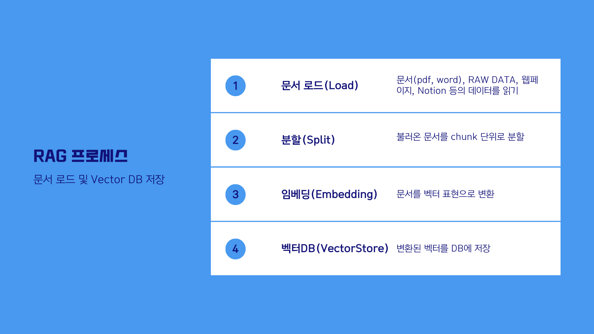

# API 키를 환경변수로 관리하기 위한 설정 파일
from dotenv import load_dotenv
# API 키 정보 로드
load_dotenv()LangChain의 RAG 파헤치기
LangChain의 RAG 파헤치기


1. 질문 처리
질문 처리 단계에서는 사용자의 질문을 받아 이를 처리하고, 관련 데이터를 찾는 작업이 이루어집니다. 이를 위해 다음과 같은 구성 요소들이 필요합니다:
- 데이터 소스 연결: 질문에 대한 답변을 찾기 위해 다양한 텍스트 데이터 소스에 연결해야 합니다. LangChain은 다양한 데이터 소스와의 연결을 간편하게 설정할 수 있도록 돕습니다.
- 데이터 인덱싱 및 검색: 데이터 소스에서 관련 정보를 효율적으로 찾기 위해, 데이터는 인덱싱되어야 합니다. LangChain은 인덱싱 과정을 자동화하고, 사용자의 질문과 관련된 데이터를 검색하는 데 필요한 도구를 제공합니다.
2. 답변 생성
관련 데이터를 찾은 후에는 이를 기반으로 사용자의 질문에 답변을 생성해야 합니다. 이 단계에서는 다음 구성 요소가 중요합니다:
- 답변 생성 모델: LangChain은 고급 자연어 처리(NLP) 모델을 사용하여 검색된 데이터로부터 답변을 생성할 수 있는 기능을 제공합니다. 이러한 모델은 사용자의 질문과 검색된 데이터를 입력으로 받아, 적절한 답변을 생성합니다.
아키텍처
우리는 Q&A 소개에서 개요한 대로 전형적인 RAG 애플리케이션을 만들 것입니다. 이것은 두 가지 주요 구성 요소를 가지고 있습니다:
인덱싱: 소스에서 데이터를 수집하고 인덱싱하는 파이프라인입니다. 이 작업은 보통 오프라인에서 발생합니다.
검색 및 생성: 실제 RAG 체인으로, 사용자 쿼리를 실행 시간에 받아 인덱스에서 관련 데이터를 검색한 다음, 그 데이터를 모델에 전달합니다.
RAW 데이터에서 답변을 받기까지의 전체 순서는 다음과 같습니다.
인덱싱

- 로드: 먼저 데이터를 로드해야 합니다. 이를 위해 DocumentLoaders를 사용할 것입니다.
- 분할: Text splitters는 큰
Documents를 더 작은 청크로 나눕니다. 이는 데이터를 인덱싱하고 모델에 전달하는 데 유용하며, 큰 청크는 검색하기 어렵고 모델의 유한한 컨텍스트 창에 맞지 않습니다. - 저장: 나중에 검색할 수 있도록 분할을 저장하고 인덱싱할 장소가 필요합니다. 이는 종종 VectorStore와 Embeddings 모델을 사용하여 수행됩니다.
검색 및 생성

실습에 활용한 문서
소프트웨어정책연구소(SPRi) - 2023년 12월호
- 저자: 유재흥(AI정책연구실 책임연구원), 이지수(AI정책연구실 위촉연구원)
- 링크: https://spri.kr/posts/view/23669
- 파일명:
SPRI_AI_Brief_2023년12월호_F.pdf
실습을 위해 다운로드 받은 파일을 data 폴더로 복사해 주시기 바랍니다
환경설정
API KEY 를 설정합니다.
LangChain으로 구축한 애플리케이션은 여러 단계에 걸쳐 LLM 호출을 여러 번 사용하게 됩니다. 이러한 애플리케이션이 점점 더 복잡해짐에 따라, 체인이나 에이전트 내부에서 정확히 무슨 일이 일어나고 있는지 조사할 수 있는 능력이 매우 중요해집니다. 이를 위한 최선의 방법은 LangSmith를 사용하는 것입니다.
LangSmith가 필수는 아니지만, 유용합니다. LangSmith를 사용하고 싶다면, 위의 링크에서 가입한 후, 로깅 추적을 시작하기 위해 환경 변수를 설정해야 합니다.
# LangSmith 추적을 설정합니다. https://smith.langchain.com
# !pip install -qU langchain-teddynote
from langchain_teddynote import logging
# 프로젝트 이름을 입력합니다.
logging.langsmith("CH12-RAG")모듈별로 자세히 살펴보기
import bs4
from langchain import hub
from langchain_text_splitters import RecursiveCharacterTextSplitter
from langchain_community.document_loaders import WebBaseLoader
from langchain_community.vectorstores import Chroma, FAISS
from langchain_core.output_parsers import StrOutputParser
from langchain_core.runnables import RunnablePassthrough
from langchain_openai import ChatOpenAI, OpenAIEmbeddings아래는 에서 다뤘던 기본적인 RAG 모델을 사용하는 예제입니다.
여기서 각 단계별로 다양한 옵션을 설정하거나 새로운 기법을 적용할 수 있습니다.
# 단계 1: 문서 로드(Load Documents)
# 뉴스기사 내용을 로드하고, 청크로 나누고, 인덱싱합니다.
url = "https://n.news.naver.com/article/437/0000378416"
loader = WebBaseLoader(
web_paths=(url,),
bs_kwargs=dict(
parse_only=bs4.SoupStrainer(
"div",
attrs={"class": ["newsct_article _article_body", "media_end_head_title"]},
)
),
)
docs = loader.load()
# 단계 2: 문서 분할(Split Documents)
text_splitter = RecursiveCharacterTextSplitter(chunk_size=1000, chunk_overlap=50)
splits = text_splitter.split_documents(docs)
# 단계 3: 임베딩 & 벡터스토어 생성(Create Vectorstore)
# 벡터스토어를 생성합니다.
vectorstore = FAISS.from_documents(documents=splits, embedding=OpenAIEmbeddings())
# 단계 4: 검색(Search)
# 뉴스에 포함되어 있는 정보를 검색하고 생성합니다.
retriever = vectorstore.as_retriever()
# 단계 5: 프롬프트 생성(Create Prompt)
# 프롬프트를 생성합니다.
prompt = hub.pull("rlm/rag-prompt")
# 단계 6: 언어모델 생성(Create LLM)
# 모델(LLM) 을 생성합니다.
llm = ChatOpenAI(model_name="gpt-3.5-turbo", temperature=0)
def format_docs(docs):
# 검색한 문서 결과를 하나의 문단으로 합쳐줍니다.
return "\n\n".join(doc.page_content for doc in docs)
# 단계 7: 체인 생성(Create Chain)
rag_chain = (
{"context": retriever | format_docs, "question": RunnablePassthrough()}
| prompt
| llm
| StrOutputParser()
)
# 단계 8: 체인 실행(Run Chain)
# 문서에 대한 질의를 입력하고, 답변을 출력합니다.
question = "부영그룹의 출산 장려 정책에 대해 설명해주세요"
response = rag_chain.invoke(question)
# 결과 출력
print(f"URL: {url}")
print(f"문서의 수: {len(docs)}")
print("===" * 20)
print(f"[HUMAN]\n{question}\n")
print(f"[AI]\n{response}")단계 1: 문서 로드(Load Documents)
웹페이지
WebBaseLoader는 지정된 웹 페이지에서 필요한 부분만을 파싱하기 위해 bs4.SoupStrainer를 사용합니다.
[참고]
bs4.SoupStrainer는 편리하게 웹에서 원하는 요소를 가져올 수 있도록 해줍니다.
(예시)
bs4.SoupStrainer(
"div",
attrs={"class": ["newsct_article _article_body", "media_end_head_title"]}, # 클래스 명을 입력
)
bs4.SoupStrainer(
"article",
attrs={"id": ["dic_area"]}, # 클래스 명을 입력
)아래의 BBC 뉴스 기사입니다. 영문으로 작성된 기사로 시험해 보고 싶다면, 아래의 주석을 해제하고 실행해 보세요.
# 뉴스기사의 내용을 로드하고, 청크로 나누고, 인덱싱합니다.
loader = WebBaseLoader(
web_paths=("https://www.bbc.com/news/business-68092814",),
bs_kwargs=dict(
parse_only=bs4.SoupStrainer(
"main",
attrs={"id": ["main-content"]},
)
),
)
docs = loader.load()
print(f"문서의 수: {len(docs)}")
docs[0].page_content[:500]from langchain.document_loaders import PyPDFLoader
# PDF 파일 로드. 파일의 경로 입력
loader = PyPDFLoader("data/SPRI_AI_Brief_2023년12월호_F.pdf")
# 페이지 별 문서 로드
docs = loader.load()
print(f"문서의 수: {len(docs)}")
# 10번째 페이지의 내용 출력
print(f"\n[페이지내용]\n{docs[10].page_content[:500]}")
print(f"\n[metadata]\n{docs[10].metadata}\n")CSV
CSV 는 페이지 번호 대신 행번호로 데이터를 조회합니다.
from langchain_community.document_loaders.csv_loader import CSVLoader
# CSV 파일 로드
loader = CSVLoader(file_path="data/titanic.csv")
docs = loader.load()
print(f"문서의 수: {len(docs)}")
# 10번째 페이지의 내용 출력
print(f"\n[페이지내용]\n{docs[10].page_content[:500]}")
print(f"\n[metadata]\n{docs[10].metadata}\n")TXT 파일
from langchain_community.document_loaders import TextLoader
loader = TextLoader("data/appendix-keywords.txt")
docs = loader.load()
print(f"문서의 수: {len(docs)}")
# 10번째 페이지의 내용 출력
print(f"\n[페이지내용]\n{docs[0].page_content[:500]}")
print(f"\n[metadata]\n{docs[0].metadata}\n")폴더 내의 모든 파일 로드
아래는 폴더 내 모든 .txt 파일을 로드하는 예시입니다.
from langchain_community.document_loaders import DirectoryLoader
loader = DirectoryLoader(".", glob="data/*.txt", show_progress=True)
docs = loader.load()
print(f"문서의 수: {len(docs)}")
# 10번째 페이지의 내용 출력
print(f"\n[페이지내용]\n{docs[0].page_content[:500]}")
print(f"\n[metadata]\n{docs[0].metadata}\n")다음은 폴더내 모든 .pdf 파일을 로드하는 예제입니다.
from langchain_community.document_loaders import DirectoryLoader
loader = DirectoryLoader(".", glob="data/*.pdf")
docs = loader.load()
print(f"문서의 수: {len(docs)}\n")
print("[메타데이터]\n")
print(docs[0].metadata)
print("\n========= [앞부분] 미리보기 =========\n")
print(docs[0].page_content[2500:3000])Python
다음은 .py 파일을 로드하는 예제입니다.
from langchain_community.document_loaders import PythonLoader
loader = DirectoryLoader(".", glob="**/*.py", loader_cls=PythonLoader)
docs = loader.load()
print(f"문서의 수: {len(docs)}\n")
print("[메타데이터]\n")
print(docs[0].metadata)
print("\n========= [앞부분] 미리보기 =========\n")
print(docs[0].page_content[:500])단계 2: 문서 분할(Split Documents)
# 뉴스기사의 내용을 로드하고, 청크로 나누고, 인덱싱합니다.
loader = WebBaseLoader(
web_paths=("https://www.bbc.com/news/business-68092814",),
bs_kwargs=dict(
parse_only=bs4.SoupStrainer(
"main",
attrs={"id": ["main-content"]},
)
),
)
docs = loader.load()
print(f"문서의 수: {len(docs)}")
docs[0].page_content[:500]CharacterTextSplitter
이것은 가장 간단한 방법입니다. 이 방법은 문자를 기준으로 분할합니다(기본값은 “”) 그리고 청크의 길이를 문자의 수로 측정합니다.
- 텍스트가 어떻게 분할되는지: 단일 문자 단위
- 청크 크기가 어떻게 측정되는지:
lenof characters.
시각화 예제: https://chunkviz.up.railway.app/
CharacterTextSplitter 클래스는 텍스트를 특정 크기의 청크로 분할하는 기능을 제공합니다.
separator매개변수는 청크를 구분하는 데 사용되는 문자열을 지정하며, 여기서는 두 개의 개행 문자("\n\n")를 사용합니다chunk_size는 각 청크의 최대 길이를 결정합니다chunk_overlap은 인접한 청크 간에 겹치는 문자의 수를 지정합니다.length_function은 청크의 길이를 계산하는 데 사용되는 함수를 결정하며, 기본적으로 문자열의 길이를 반환하는len함수가 사용됩니다.is_separator_regex는separator가 정규 표현식으로 해석될지 여부를 결정하는 불리언 값입니다.
from langchain.text_splitter import CharacterTextSplitter
text_splitter = CharacterTextSplitter(
separator="\n\n",
chunk_size=100,
chunk_overlap=10,
length_function=len,
is_separator_regex=False,
)이 함수는 text_splitter 객체의 create_documents 메소드를 사용하여 주어진 텍스트(state_of_the_union)를 여러 문서로 분할하고, 그 결과를 texts 변수에 저장합니다. 이후 texts의 첫 번째 문서를 출력합니다. 이 과정은 텍스트 데이터를 처리하고 분석하기 위한 초기 단계로 볼 수 있으며, 특히 큰 텍스트 데이터를 관리 가능한 크기의 단위로 나누는 데 유용합니다.
# chain of density 논문의 일부 내용을 불러옵니다
with open("data/chain-of-density.txt", "r") as f:
text = f.read()[:500]text_splitter = CharacterTextSplitter(
chunk_size=100, chunk_overlap=10, separator="\n\n"
)
text_splitter.split_text(text)text_splitter = CharacterTextSplitter(chunk_size=100, chunk_overlap=10, separator="\n")
text_splitter.split_text(text)text_splitter = CharacterTextSplitter(chunk_size=100, chunk_overlap=10, separator=" ")
text_splitter.split_text(text)text_splitter = CharacterTextSplitter(chunk_size=100, chunk_overlap=0, separator=" ")
text_splitter.split_text(text)text_splitter = CharacterTextSplitter(chunk_size=1000, chunk_overlap=100, separator=" ")
# text 파일을 청크로 나누어줍니다.
text_splitter.split_text(text)
# document를 청크로 나누어줍니다.
split_docs = text_splitter.split_documents(docs)
len(split_docs)split_docs[0]# 뉴스기사의 내용을 로드하고, 청크로 나누고, 인덱싱합니다.
loader = WebBaseLoader(
web_paths=("https://www.bbc.com/news/business-68092814",),
bs_kwargs=dict(
parse_only=bs4.SoupStrainer(
"main",
attrs={"id": ["main-content"]},
)
),
)
# splitter 를 정의합니다.
text_splitter = CharacterTextSplitter(chunk_size=1000, chunk_overlap=100, separator=" ")
# 문서를 로드시 바로 분할까지 수행합니다.
split_docs = loader.load_and_split(text_splitter=text_splitter)
print(f"문서의 수: {len(docs)}")
docs[0].page_content[:500]RecursiveTextSplitter
이 텍스트 분할기는 일반 텍스트에 권장되는 텍스트 분할기입니다.
- 텍스트가 어떻게 분할 규칙: list of
separators - 청크 크기가 어떻게 측정되는가:
lenof characters
# langchain 패키지에서 RecursiveCharacterTextSplitter 클래스를 가져옵니다.
from langchain.text_splitter import RecursiveCharacterTextSplitterRecursiveCharacterTextSplitter 클래스는 텍스트를 재귀적으로 분할하는 기능을 제공합니다. 이 클래스는 chunk_size로 분할할 청크의 크기, chunk_overlap으로 인접 청크 간의 겹침 크기, length_function으로 청크의 길이를 계산하는 함수, 그리고 is_separator_regex로 구분자가 정규 표현식인지 여부를 지정하는 매개변수를 받습니다. 예시에서는 청크 크기를 100, 겹침 크기를 20으로 설정하고, 길이 계산 함수로 len을 사용하며, 구분자가 정규 표현식이 아님을 나타내기 위해 is_separator_regex를 False로 설정합니다.
recursive_text_splitter = RecursiveCharacterTextSplitter(
# 정말 작은 청크 크기를 설정합니다.
chunk_size=100,
chunk_overlap=10,
length_function=len,
is_separator_regex=False,
)# chain of density 논문의 일부 내용을 불러옵니다
with open("data/chain-of-density.txt", "r") as f:
text = f.read()[:500]character_text_splitter = CharacterTextSplitter(
chunk_size=100, chunk_overlap=10, separator=" "
)
for sent in character_text_splitter.split_text(text):
print(sent)
print("===" * 20)
recursive_text_splitter = RecursiveCharacterTextSplitter(
chunk_size=100, chunk_overlap=10
)
for sent in recursive_text_splitter.split_text(text):
print(sent)- 지정한 separators 리스트를 순차적으로 시도하며 주어진 문서를 분할합니다.
- 청크가 충분히 작아질 때까지 순서대로 분할을 시도합니다. 기본 목록은 [“”, “”, ” “,””]입니다.
- 이는 일반적으로 의미적으로 가장 연관성이 강한 텍스트 조각인 것처럼 보이는 모든 단락(그리고 문장, 단어)을 가능한 한 길게 유지하려는 효과가 있습니다.
# recursive_text_splitter 에 기본 지정된 separators 를 확인합니다.
recursive_text_splitter._separatorsSemantic Similarity
의미적 유사성을 기준으로 텍스트를 분할합니다.
높은 수준(high level)에서 문장으로 분할한 다음 3개 문장으로 그룹화한 다음 임베딩 공간에서 유사한 문장을 병합하는 방식입니다.
# 최신 버전으로 업데이트합니다.
# !pip install -U langchain langchain_experimental -qfrom langchain_experimental.text_splitter import SemanticChunker
from langchain_openai.embeddings import OpenAIEmbeddings
# SemanticChunker 를 생성합니다.
semantic_text_splitter = SemanticChunker(OpenAIEmbeddings(), add_start_index=True)# chain of density 논문의 일부 내용을 불러옵니다
with open("data/chain-of-density.txt", "r") as f:
text = f.read()
for sent in semantic_text_splitter.split_text(text):
print(sent)
print("===" * 20)3 단계: 임베딩
참고: https://python.langchain.com/docs/integrations/text_embedding
유료 과금 임베딩(OpenAI)
from langchain_community.vectorstores import FAISS
from langchain_openai.embeddings import OpenAIEmbeddings
# 단계 3: 임베딩 & 벡터스토어 생성(Create Vectorstore)
# 벡터스토어를 생성합니다.
vectorstore = FAISS.from_documents(documents=splits, embedding=OpenAIEmbeddings())다음은 OpenAI 의 지원되는 Embedding 모델들의 목록입니다.
- 기본 값은
text-embeding-ada-002입니다.
| MODEL | ROUGH PAGES PER DOLLAR | EXAMPLE PERFORMANCE ON MTEB EVAL |
|---|---|---|
| text-embedding-3-small | 62,500 | 62.3% |
| text-embedding-3-large | 9,615 | 64.6% |
| text-embedding-ada-002 | 12,500 | 61.0% |
vectorstore = FAISS.from_documents(
documents=splits, embedding=OpenAIEmbeddings(model="text-embedding-3-small")
)무료 Open Source 기반 임베딩
from langchain_community.embeddings import HuggingFaceBgeEmbeddings
# 단계 3: 임베딩 & 벡터스토어 생성(Create Vectorstore)
# 벡터스토어를 생성합니다.
vectorstore = FAISS.from_documents(
documents=splits, embedding=HuggingFaceBgeEmbeddings()
)# !pip install fastembed -qfrom langchain_community.embeddings.fastembed import FastEmbedEmbeddings
vectorstore = FAISS.from_documents(documents=splits, embedding=FastEmbedEmbeddings())4단계: 벡터스토어 생성(Create Vectorstore)
from langchain_community.vectorstores import FAISS
# FAISS DB 적용
vectorstore = FAISS.from_documents(documents=splits, embedding=OpenAIEmbeddings())from langchain_community.vectorstores import Chroma
# Chroma DB 적용
vectorstore = Chroma.from_documents(documents=splits, embedding=OpenAIEmbeddings())5단계: Retriever 생성
리트리버는 구조화되지 않은 쿼리가 주어지면 문서를 반환하는 인터페이스입니다.
리트리버는 문서를 저장할 필요 없이 문서를 반환(또는 검색)하기만 합니다.
생성된 VectorStore 에 as_retriver() 로 가져와서 Retriever 를 생성합니다.
유사도 기반 검색
- 기본값은 코사인 유사도인
similarity가 적용되어 있습니다.
query = "회사의 저출생 정책이 뭐야?"
retriever = vectorstore.as_retriever(search_type="similarity")
search_result = retriever.get_relevant_documents(query)
print(search_result)similarity_score_threshold 는 유사도 기반 검색에서 score_threshold 이상인 결과만 반환합니다.
query = "회사의 저출생 정책이 뭐야?"
retriever = vectorstore.as_retriever(
search_type="similarity_score_threshold", search_kwargs={"score_threshold": 0.8}
)
search_result = retriever.get_relevant_documents(query)
print(search_result)maximum marginal search result 를 사용하여 검색합니다.
query = "회사의 저출생 정책이 뭐야?"
retriever = vectorstore.as_retriever(search_type="mmr", search_kwargs={"k": 2})
search_result = retriever.get_relevant_documents(query)
print(search_result)다양한 쿼리 생성
from langchain.retrievers.multi_query import MultiQueryRetriever
from langchain_openai import ChatOpenAI
query = "회사의 저출생 정책이 뭐야?"
llm = ChatOpenAI(temperature=0, model="gpt-3.5-turbo")
retriever_from_llm = MultiQueryRetriever.from_llm(
retriever=vectorstore.as_retriever(), llm=llm
)# Set logging for the queries
import logging
logging.basicConfig()
logging.getLogger("langchain.retrievers.multi_query").setLevel(logging.INFO)unique_docs = retriever_from_llm.get_relevant_documents(query=question)
len(unique_docs)Ensemble Retriever
from langchain.retrievers import BM25Retriever, EnsembleRetriever
from langchain_community.vectorstores import FAISS
from langchain_openai import OpenAIEmbeddingsdoc_list = [
"난 오늘 많이 먹어서 배가 정말 부르다",
"떠나는 저 배가 오늘 마지막 배인가요?",
"내가 제일 좋아하는 과일들은 배, 사과, 키워, 수박 입니다.",
]
# initialize the bm25 retriever and faiss retriever
bm25_retriever = BM25Retriever.from_texts(doc_list)
bm25_retriever.k = 2
faiss_vectorstore = FAISS.from_texts(doc_list, OpenAIEmbeddings())
faiss_retriever = faiss_vectorstore.as_retriever(search_kwargs={"k": 2})
# initialize the ensemble retriever
ensemble_retriever = EnsembleRetriever(
retrievers=[bm25_retriever, faiss_retriever], weights=[0.5, 0.5]
)def pretty_print(docs):
for i, doc in enumerate(docs):
print(f"[{i+1}] {doc.page_content}")sample_query = "나 요즘 배에 정말 살이 많이 쪘어..."
print(f"[Query]\n{sample_query}\n")
relevant_docs = bm25_retriever.get_relevant_documents(sample_query)
print("[BM25 Retriever]")
pretty_print(relevant_docs)
print("===" * 20)
relevant_docs = faiss_retriever.get_relevant_documents(sample_query)
print("[FAISS Retriever]")
pretty_print(relevant_docs)
print("===" * 20)
relevant_docs = ensemble_retriever.get_relevant_documents(sample_query)
print("[Ensemble Retriever]")
pretty_print(relevant_docs)sample_query = "바다 위에 떠다니는 배들이 많다"
print(f"[Query]\n{sample_query}\n")
relevant_docs = bm25_retriever.get_relevant_documents(sample_query)
print("[BM25 Retriever]")
pretty_print(relevant_docs)
print("===" * 20)
relevant_docs = faiss_retriever.get_relevant_documents(sample_query)
print("[FAISS Retriever]")
pretty_print(relevant_docs)
print("===" * 20)
relevant_docs = ensemble_retriever.get_relevant_documents(sample_query)
print("[Ensemble Retriever]")
pretty_print(relevant_docs)sample_query = "ships"
print(f"[Query]\n{sample_query}\n")
relevant_docs = bm25_retriever.get_relevant_documents(sample_query)
print("[BM25 Retriever]")
pretty_print(relevant_docs)
print("===" * 20)
relevant_docs = faiss_retriever.get_relevant_documents(sample_query)
print("[FAISS Retriever]")
pretty_print(relevant_docs)
print("===" * 20)
relevant_docs = ensemble_retriever.get_relevant_documents(sample_query)
print("[Ensemble Retriever]")
pretty_print(relevant_docs)sample_query = "pear"
print(f"[Query]\n{sample_query}\n")
relevant_docs = bm25_retriever.get_relevant_documents(sample_query)
print("[BM25 Retriever]")
pretty_print(relevant_docs)
print("===" * 20)
relevant_docs = faiss_retriever.get_relevant_documents(sample_query)
print("[FAISS Retriever]")
pretty_print(relevant_docs)
print("===" * 20)
relevant_docs = ensemble_retriever.get_relevant_documents(sample_query)
print("[Ensemble Retriever]")
pretty_print(relevant_docs)6단계: 프롬프트 생성(Create Prompt)
프롬프트 엔지니어링은 주어진 데이터(context)를 토대로 우리가 원하는 결과를 도출할 때 중요한 역할을 합니다.
[TIP1]
- 만약,
retriever에서 도출한 결과에서 중요한 정보가 누락된다면retriever의 로직을 수정해야 합니다. - 만약,
retriever에서 도출한 결과가 많은 정보를 포함하고 있지만,llm이 그 중에서 중요한 정보를 찾지 못한거나 원하는 형태로 출력하지 않는다면 프롬프트를 수정해야 합니다.
[TIP2]
- LangSmith 의 hub 에는 검증된 프롬프트가 많이 업로드 되어 있습니다.
- 검증된 프롬프트를 활용하거나 약간 수정한다면 비용과 시간을 절약할 수 있습니다.
- https://smith.langchain.com/hub/search?q=rag
from langchain import hubprompt = hub.pull("rlm/rag-prompt")
prompt7단계: 언어모델 생성(Create LLM)
OpenAI 모델 중 하나를 선택합니다.
gpt-3.5-turbo: OpenAI의 GPT-3.5-turbo 모델gpt-4-turbo-preview: OpenAI의 GPT-4-turbo-preview 모델
자세한 비용 체계는 OpenAI API 모델 리스트 / 요금표에서 확인할 수 있습니다.
from langchain_openai import ChatOpenAI
model = ChatOpenAI(temperature=0, model="gpt-3.5-turbo")다음의 방식으로 토큰 사용량을 확인할 수 있습니다.
from langchain.callbacks import get_openai_callback
with get_openai_callback() as cb:
result = model.invoke("대한민국의 수도는 어디인가요?")
print(cb)HuggingFace 에 업로드 되어 있는 오픈소스 모델을 손쉽게 다운로드 받아 사용할 수 있습니다.
아래의 리더보드에서 날마다 성능을 개선하는 오픈소스 리더보드를 확인할 수 있습니다.
# HuggingFaceHub 객체 생성
from langchain.llms import HuggingFaceHub
repo_id = "google/flan-t5-xxl"
t5_model = HuggingFaceHub(
repo_id=repo_id, model_kwargs={"temperature": 0.1, "max_length": 512}
)t5_model.invoke("Where is the capital of South Korea?")RAG 템플릿 실험
# 단계 1: 문서 로드(Load Documents)
# 문서를 로드하고, 청크로 나누고, 인덱싱합니다.
from langchain.document_loaders import PyPDFLoader
# PDF 파일 로드. 파일의 경로 입력
file_path = "data/SPRI_AI_Brief_2023년12월호_F.pdf"
loader = PyPDFLoader(file_path=file_path)
# 단계 2: 문서 분할(Split Documents)
text_splitter = RecursiveCharacterTextSplitter(chunk_size=1000, chunk_overlap=50)
split_docs = loader.load_and_split(text_splitter=text_splitter)
# 단계 3, 4: 임베딩 & 벡터스토어 생성(Create Vectorstore)
# 벡터스토어를 생성합니다.
vectorstore = FAISS.from_documents(documents=splits, embedding=OpenAIEmbeddings())
# 단계 5: 리트리버 생성(Create Retriever)
# 사용자의 질문(query) 에 부합하는 문서를 검색합니다.
# 유사도 높은 K 개의 문서를 검색합니다.
k = 3
# (Sparse) bm25 retriever and (Dense) faiss retriever 를 초기화 합니다.
bm25_retriever = BM25Retriever.from_documents(split_docs)
bm25_retriever.k = k
faiss_vectorstore = FAISS.from_documents(split_docs, OpenAIEmbeddings())
faiss_retriever = faiss_vectorstore.as_retriever(search_kwargs={"k": k})
# initialize the ensemble retriever
ensemble_retriever = EnsembleRetriever(
retrievers=[bm25_retriever, faiss_retriever], weights=[0.5, 0.5]
)
# 단계 6: 프롬프트 생성(Create Prompt)
# 프롬프트를 생성합니다.
prompt = hub.pull("rlm/rag-prompt")
# 단계 7: 언어모델 생성(Create LLM)
# 모델(LLM) 을 생성합니다.
llm = ChatOpenAI(model_name="gpt-3.5-turbo", temperature=0)
def format_docs(docs):
# 검색한 문서 결과를 하나의 문단으로 합쳐줍니다.
return "\n\n".join(doc.page_content for doc in docs)
# 단계 8: 체인 생성(Create Chain)
rag_chain = (
{"context": ensemble_retriever | format_docs, "question": RunnablePassthrough()}
| prompt
| llm
| StrOutputParser()
)
# 결과 출력
print(f"PDF Path: {file_path}")
print(f"문서의 수: {len(docs)}")
print("===" * 20)
print(f"[HUMAN]\n{question}\n")
print(f"[AI]\n{response}")문서: data/SPRI_AI_Brief_2023년12월호_F.pdf (페이지 10)
- LangSmith: https://smith.langchain.com/public/4449e744-f0a0-42d2-a3df-855bd7f41652/r
# 단계 8: 체인 실행(Run Chain)
# 문서에 대한 질의를 입력하고, 답변을 출력합니다.
question = "삼성 가우스에 대해 설명해주세요"
response = rag_chain.invoke(question)
print(response)문서: data/SPRI_AI_Brief_2023년12월호_F.pdf (페이지 12)
- LangSmith: https://smith.langchain.com/public/2b2913c9-6b9c-4a19-bb16-dc2256e2fdbf/r
# 단계 8: 체인 실행(Run Chain)
# 문서에 대한 질의를 입력하고, 답변을 출력합니다.
question = "미래의 AI 소프트웨어 매출 전망은 어떻게 되나요?"
response = rag_chain.invoke(question)
print(response)문서: data/SPRI_AI_Brief_2023년12월호_F.pdf (페이지 14)
- LangSmith: https://smith.langchain.com/public/17ef6df2-b012-4f8e-b0a8-62894d82c097/r
# 단계 8: 체인 실행(Run Chain)
# 문서에 대한 질의를 입력하고, 답변을 출력합니다.
question = "YouTube 가 2024년에 의무화 한 것은 무엇인가요?"
response = rag_chain.invoke(question)
print(response)